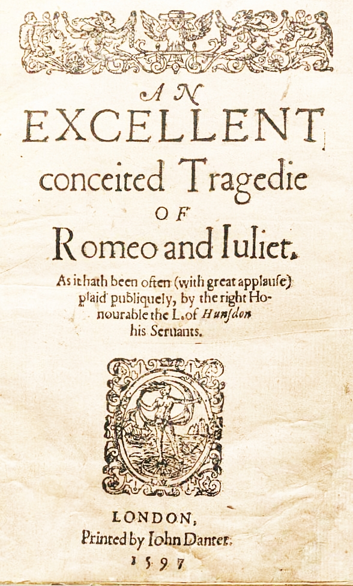
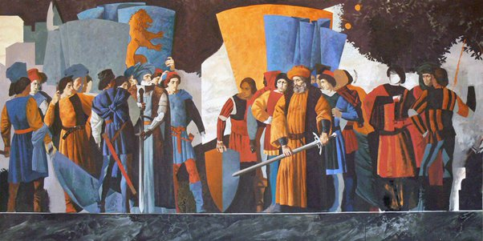
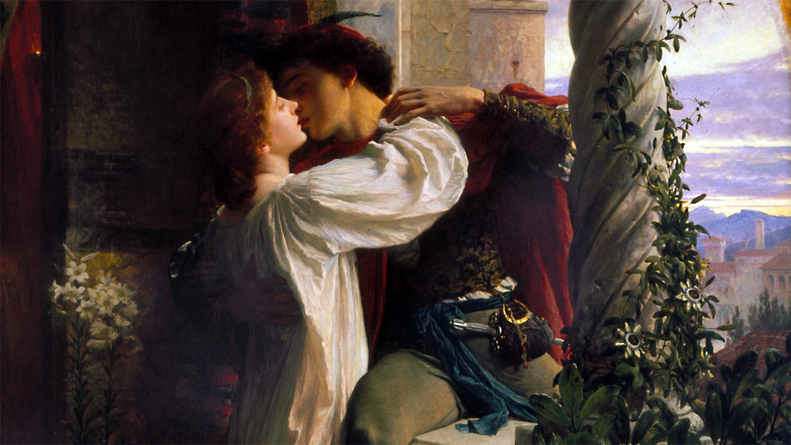
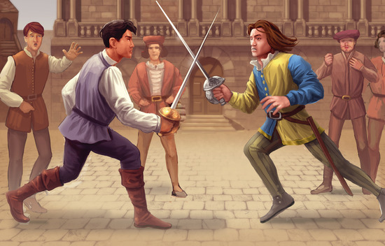
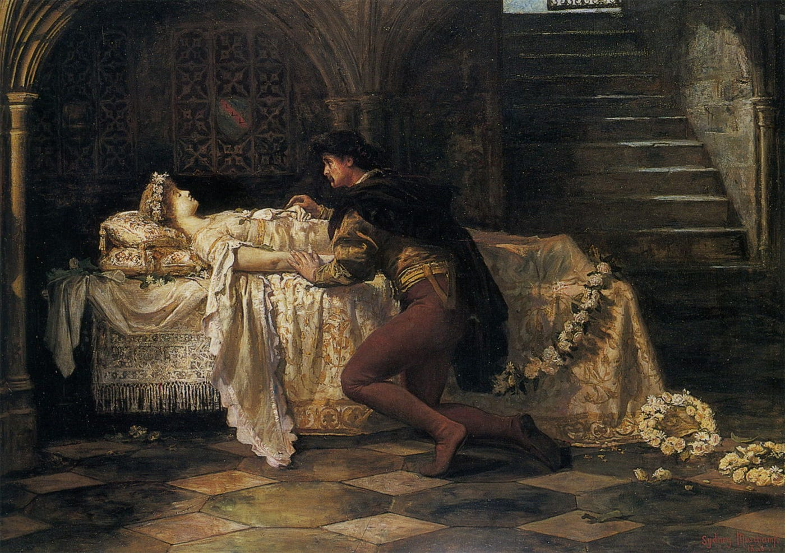

ENGLISH 9
Teacher: Lhowel Balbuena
Romeo and Juliet
Romeo and Juliet is a tragedy written by William Shakespeare early in his career about the romance between two Italian youths from feuding families. It was among Shakespeare's most popular plays during his lifetime and is one of his most frequently performed.
Story
The play is set in Verona, Italy, where an age-old feud exists between two noble families: the Montagues and the Capulets. The conflict between these households has caused unrest in the city for years. The story begins with a brawl in the streets between servants of the Montague and Capulet families, reflecting the deep-seated animosity.
Romeo Montague, a young man from the Montague family, is initially infatuated with Rosaline. Seeking to divert his attention, his friends Benvolio and Mercutio persuade him to attend a Capulet party. At the party, Romeo encounters Juliet, the daughter of the Capulet patriarch. Despite the longstanding feud, the two fall deeply in love at first sight.
Later that night, Romeo and Juliet secretly exchange vows of love with the help of Friar Laurence. The Friar believes that their union might eventually bring about peace between the feuding families. However, their happiness is short-lived when Tybalt, Juliet's cousin, kills Romeo's friend Mercutio in a street brawl. In a fit of rage, Romeo retaliates and kills Tybalt, leading to his banishment from Verona.
Facing separation, the couple devises a risky plan. Juliet agrees to take a potion from Friar Laurence that will make her appear dead for 42 hours. Romeo, unaware of the plan, returns, finding Juliet seemingly lifeless. Romeo, believing Juliet is truly dead, purchases poison. Heartbroken, Romeo consumes the poison just as Juliet awakens. Discovering her love's lifeless body, Juliet takes Romeo's dagger and joins him in death.
The tragic deaths of Romeo and Juliet shock the feuding families into realizing the devastating consequences of their feud. The Prince of Verona scolds the Montagues and Capulets for their senseless enmity. The play ends with the promise of reconciliation between the two families, but it comes at the cost of the lives of the young lovers.